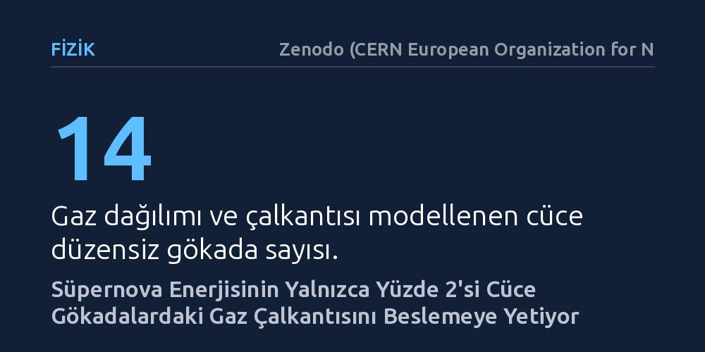

FIZIK · Zenodo (CERN European Organization for Nuclear Research) · 2026-10-10
Araştırmacılar, yıldız oluşumu düşük 14 cüce gökadada nötr hidrojen gazındaki çalkantıyı neyin beslediğini inceledi. Süpernova patlamalarından çıkan enerjinin yalnızca yaklaşık yüzde 2'sinin bu gaz hareketini kesintisiz sürdürmek için yeterli olduğu ve oranın evrensel olabileceği bulundu.
Gökadalardaki gaz çalkantısını açıklamak için bilinmeyen egzotik mekanizmalara gerek olmadığını, yıldız patlamalarından arta kalan ufacık bir enerjinin bile yeterli geldiğini gösteriyor.

Uzay boşluğundaki devasa gaz bulutları uzaktan bakıldığında durağan görünse de aslında sürekli bir çalkantı ve hareket içindedir. Gökbilimciler, özellikle atomik hidrojen gazındaki bu türbülansın zamanla enerjisini kaybedip durması gerektiğini bilir. Eğer bir enerji kaynağı bu gazı sürekli karıştırmıyorsa, hareketin kozmik ölçekte kısa sayılabilecek bir sürede sönümlenmesi beklenir. Dolayısıyla gökadalardaki gazı neyin canlı tuttuğu sorusu uzun yıllardır astrofiziğin temel bilmecelerinden biridir.
Samanyolu gibi dev sarmal gökadalarda süpernova adı verilen yıldız patlamaları bu çalkantıyı besleyen ana güç olarak kabul edilir. Ancak kütlesi küçük ve yıldız doğum hızı son derece düşük olan cüce düzensiz gökadalarda bu açıklama bugüne kadar yetersiz görülüyordu. Buralarda çok az yıldız doğduğu için patlama sayısı da azdır ve açığa çıkan enerjinin gazı hareketli tutmaya yetmeyeceği düşünülüyordu. Bu durum, ya teorik modellerimizde bir hata olduğunu ya da cüce gökadalarda henüz keşfedilmemiş farklı enerji mekanizmalarının çalıştığını düşündürüyordu.
Araştırmacılar bu sorunun yanıtını aramak için yakın çevremizdeki 14 farklı cüce düzensiz gökadayı inceledi. Bu gökadaların radyo dalgalarıyla kaydedilmiş nötr hidrojen gözlemleri kullanılarak gazın dağılımı ve hareket hızları haritalandı. Ekip, sarmal gökadalar üzerine yapılan güncel bir çalışmadan yola çıkarak, gökada disklerinin dışa doğru kalınlaşmasının enerjinin kaybolma süresini uzattığını hesaba kattı. Bu etki, gaz türbülansını sürdürmek için gereken enerji miktarını önemli ölçüde düşürüyordu.
Bilim insanları gözlenen gaz dağılımından birim alan başına düşen kinetik enerjiyi çıkardı ve bunu yıldız oluşum yoğunluğuyla ilişkilendirdi. Gazın tamamen soğuk, tamamen ılık ya da iki fazın karışımı olduğu durumları sınır senaryolar olarak ele aldılar. Ardından hiyerarşik Bayes çıkarımı adı verilen gelişmiş bir istatistik yöntemiyle, gaz çalkantısını ayakta tutmak için süpernova enerjisinin ne kadarlık bir kısmının yeterli olduğunu hesapladılar.
Elde edilen sonuçlar, cüce gökadalardaki gaz hareketini açıklamak için egzotik süreçlere gerek olmadığını ortaya koydu. İncelenen 14 cüce gökadanın tamamında, gözlenen gaz kinetik enerjisini sürdürmek için süpernova patlamalarından çıkan enerjinin yalnızca yüzde 3'ünden daha azı yeterli oluyordu. Dahası, yıldız oluşturan ana kol örnekleminin genelinde yaklaşık yüzde 2'lik sabit bir enerji aktarımının tüm bu çalkantıyı açıklayabildiği görüldü.
Daha önce dev sarmal gökadalar için yapılan ölçümler de neredeyse birebir aynı verimlilik oranına işaret etmişti. Kütlesi, gaz yoğunluğu ve yıldız oluşum hızı birbirinden tamamen farklı gökadalarda aynı oranın çıkması, süpernova verimliliğinin evrensel bir nitelik taşıdığını gösteriyor. Kısacası, en sakin ve küçük cüce gökadalarda bile yıldız patlamalarından geriye kalan ufacık bir enerji payı, gaz fırtınalarını canlı tutmaya yetiyor.
Bu bulgu, gökadaların milyarlarca yıllık gelişimini simüle eden astrofizik modelleri için önemli bir sadeleşme sağlıyor. Bilgisayar simülasyonlarında gazın nasıl davrandığını ve yıldız oluşumunun nasıl kontrol edildiğini modellemek için süpernova geri beslemesi temel parametrelerden biridir. Artık farklı gökada türleri için ayrı ayrı varsayımlar üretmek yerine, süpernova enerjisinin yaklaşık yüzde 2'sinin kinetik enerjiye dönüştüğü tek ve tutarlı bir reçete kullanılabilecek.
Yine de elde edilen sonuçların sınırlarını akılda tutmak gerekiyor. Çalışma henüz 14 cüce gökadadan oluşan mütevazı bir örnekleme dayanıyor ve kullanılan modeller gaz disklerinin geometrisine dair kabullere yaslanıyor. Ancak mevcut veriler, doğanın farklı ölçeklerdeki gökadalarda gaz dinamiğini benzer ve son derece tutumlu bir verimlilikle yönettiğine dair güçlü bir tablo çiziyor.